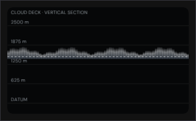
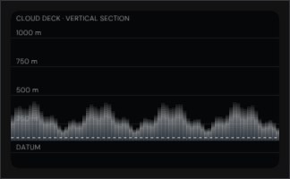
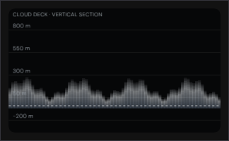
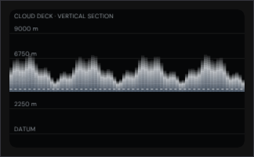
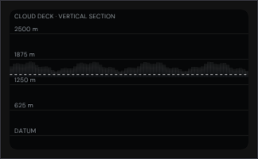

Every pixel below came out of a real ImGui draw list, rasterised on the CPU and written to PNG by
Exhibits/Workbench/Clouds/NativeCloudDeck.cpp. Nothing here is a mock-up.
The shipped code is in the bundle at byte 4598926 (className:"cloud-deck-visual"),
mirrored on disk as CloudDeckPanel.jsx — the canvas inside the
Cloud base card, imported by Inspectors.jsx and rendered for both world layers and
local volumes. Its own comment calls it “the ported InspectorDepot cloud-deck band adapted to the
native base/thickness range”, and that adaptation is the whole point: the altitude window sizes
itself to the deck. max(400, ceil((Base − Floor + Thickness) × 1.25 / 500) × 500)
opens a 2500 m window for a 1500 m base and a 9000 m one for a 3 km anvil, so the engine's
real altitudes read as well as the depot band's fixed 0–400 m ever did.
The base line is also a slider. Dragging maps pointer Y back through the same axis and commits a
rounded Base, clamped to 100–12000 m for a world layer and to a hundred kilometres
either side of half the depth for a local volume; the arrow keys step ten metres. Those mappings are
proved as pure functions rather than screenshotted.
Verified against the bundle, not the sources.
Experimental/ProjectZeroEditor/index.html is the reference: a built, minified,
self-contained file in which the depot kit is an escaped JS string and Editor.css is
inlined. Reading the .js and .css beside it is not the same thing, so
Exhibits/Workbench/BundleParity.py now pulls the shipped code out of the bundle and
asserts that every literal and every numeric constant this port depends on is present there
— 199 checks across the cloud panel, the cloud deck and the fracture card.
Executed, not illustrated

A 300 m deck on a 2500 m window. Five rules, the lowest reading DATUM because only an altitude of exactly nought does; the dashed line is the base itself.

The same deck near the ground: the window closes to 1000 m and the body fills more of the axis. Nothing is rescaled by hand — the window follows the numbers.

A bounded volume straddling the datum. The floor drops to the 100 m step below base minus a quarter depth — −200 m — and prints as a signed metre mark, not DATUM. The rules are drawn over the cloud, as the canvas orders them.

A 3 km deck based at 4 km, fully opaque. The window opens to 9000 m and the crest still clears the top edge — its deepest column tops the nominal thickness by four percent, which is why the surface clips its own box.

The gradient is three stops — 5% white, .75× density white, .72× density shadowed blue — so a near-zero density leaves only the faintest crest.